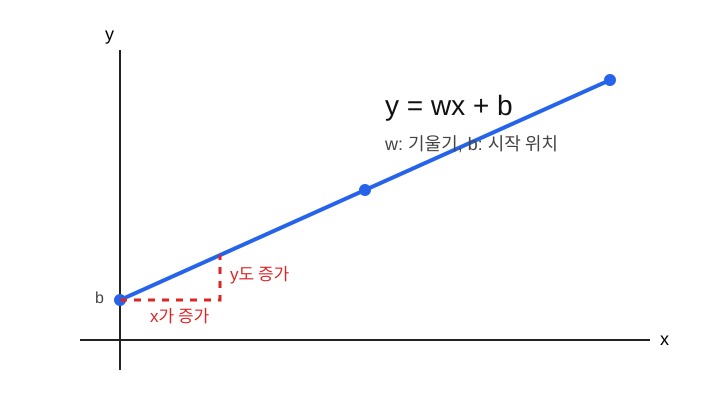
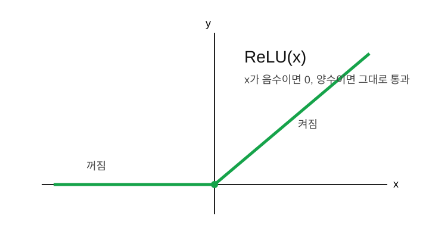
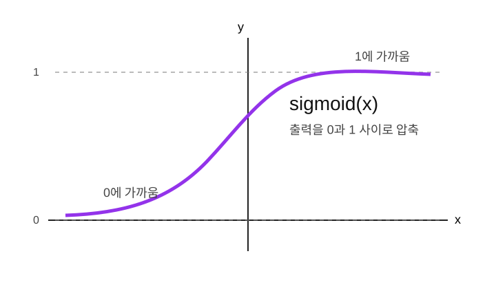

함수는 입력을 받아 출력을 만드는 규칙이고, AI 모델은 아주 큰 함수라고 볼 수 있다.
AI 모델은 데이터를 넣으면 예측값을 내놓는다.
입력 x -> 모델 f -> 예측 y_hat이 구조는 수학의 함수와 같다.
y = f(x)그래서 AI를 이해하려면 먼저 함수와 그래프를 편하게 볼 수 있어야 한다. 그래프는 함수가 입력을 어떻게 출력으로 바꾸는지 눈으로 보여준다.
flowchart LR
A[입력 데이터 x] --> B[모델 함수 f]
B --> C[예측값 y_hat]
C --> D[실제값 y와 비교]
D --> E[손실 계산]AI 모델은 복잡하지만, 가장 기본 생각은 위 그림과 같다.
함수는 입력 하나를 넣으면 정해진 규칙에 따라 출력 하나를 만드는 기계처럼 생각하면 쉽다.
입력 -> 함수 -> 출력예를 들어 다음 함수가 있다고 하자.
f(x) = 2x입력과 출력은 다음처럼 연결된다.
| 입력 x | 출력 f(x) |
|---|---|
| 1 | 2 |
| 2 | 4 |
| 3 | 6 |
| 4 | 8 |
즉 x에 무엇을 넣든 2를 곱해서 내보내는 규칙이다.
집값 예측 모델을 생각해 보자.
집 크기 -> 모델 -> 예상 집값이것도 함수다.
예상 집값 = f(집 크기)이미지 분류 모델도 함수다.
이미지 -> 모델 -> 고양이 확률, 개 확률, 자동차 확률언어모델도 함수다.
지금까지의 문장 -> 모델 -> 다음 토큰 확률AI 모델의 가장 작은 형태는 일차함수로 생각할 수 있다.
y_hat = wx + b여기서 w와 b는 모델이 학습하면서 바꾸는
숫자다.

| 기호 | 쉬운 뜻 | AI에서의 이름 |
|---|---|---|
x |
입력 | 데이터 |
y_hat |
예측값 | 모델 출력 |
w |
기울기 | weight |
b |
시작 위치 | bias |
기울기 w는 x가 1만큼 바뀔 때
y가 얼마나 바뀌는지를 나타낸다.
y = 2x이 함수에서는 x가 1 늘면 y는 2 늘어난다.
그래서 기울기는 2다.
y = 5x이 함수에서는 x가 1 늘면 y는 5 늘어난다.
그래서 그래프가 더 가파르다.
AI 관점에서는 w가 입력의 영향력을 나타낸다.
w가 크면 입력 x가 예측값에 크게 영향을
준다.
절편 b는 x = 0일 때의 출력값이다.
y = 2x + 3이 함수에서 x = 0이면 y = 3이다. 그래서
b = 3이다.
AI 관점에서는 bias가 기본값을 조정하는 역할을 한다. 입력이 0이어도 모델이 어떤 기본 출력을 가질 수 있게 해준다.
그래프를 볼 때는 세 가지를 먼저 확인한다.
이 세 가지만 봐도 함수의 성격을 대부분 이해할 수 있다.
ReLU는 딥러닝에서 많이 쓰는 활성화 함수다.
ReLU(x) = max(0, x)뜻은 단순하다.
x가 음수이면 0으로 만든다.x가 양수이면 그대로 통과시킨다.
ReLU는 신경망에 꺾이는 성질을 넣어준다. 이 꺾임 덕분에 신경망은 단순한 직선보다 훨씬 복잡한 패턴을 표현할 수 있다.
sigmoid는 어떤 숫자든 0과 1 사이로 바꾸는 함수다.
sigmoid(x) = 1 / (1 + e^(-x))
sigmoid는 확률처럼 해석하고 싶을 때 유용하다.
예를 들어 출력이 0.8이면 다음처럼 말할 수 있다.
이메일이 스팸일 가능성 80%softmax는 여러 개의 점수를 확률처럼 바꾼다.
예를 들어 모델이 다음 점수를 냈다고 하자.
| 클래스 | 점수 |
|---|---|
| 고양이 | 2.0 |
| 개 | 1.0 |
| 자동차 | 0.1 |
softmax를 통과하면 전체 합이 1인 확률 형태가 된다.
| 클래스 | 확률 예시 |
|---|---|
| 고양이 | 0.66 |
| 개 | 0.24 |
| 자동차 | 0.10 |
softmax는 분류 모델의 마지막 단계에서 자주 등장한다.
모델이 다음과 같다고 하자.
y_hat = 3x + 2x = 4일 때 예측값은 다음과 같다.
y_hat = 3 * 4 + 2 = 14여기서 의미는 다음과 같다.
x는 4다.w는 3이다.b는 2다.y_hat은 14다.처음 모델이 이렇게 예측한다고 하자.
y_hat = 1x + 0하지만 실제 데이터가 다음 규칙에 가깝다면,
y = 3x + 2학습은 w를 1에서 3에 가깝게, b를 0에서 2에
가깝게 바꾸는 과정이다.
즉 학습은 함수의 모양을 데이터에 맞게 조정하는 일이다.
flowchart TD
A[처음 함수] --> B[예측]
B --> C[오차 확인]
C --> D[w와 b 수정]
D --> E[더 나은 함수]
E --> Bdef model(x, w, b):
return w * x + b
x = 4
w = 3
b = 2
y_hat = model(x, w, b)
print(y_hat) # 14ReLU도 코드로 쓰면 간단하다.
def relu(x):
return max(0, x)
print(relu(-3)) # 0
print(relu(5)) # 5| 헷갈리는 말 | 쉽게 풀어쓴 말 |
|---|---|
| 함수 | 입력을 출력으로 바꾸는 규칙 |
| 그래프 | 함수의 모양을 눈으로 보여준 것 |
| 기울기 | 입력이 바뀔 때 출력이 얼마나 바뀌는지 |
| bias | 기본 출력 위치를 조정하는 값 |
| 활성화 함수 | 신경망에 꺾임과 비선형성을 넣는 함수 |
y_hat = wx + b에서 w와 b는
각각 무엇인가?AI 모델은 입력을 예측값으로 바꾸는 함수다. 학습은 이 함수의 모양을
데이터에 맞게 바꾸는 과정이다. 가장 작은 출발점은
y_hat = wx + b이며, 딥러닝은 이런 함수들을 아주 많이 연결한
구조로 볼 수 있다.
다음 노트: 02_벡터와내적